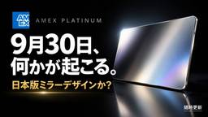

クレカで妄想トラベル
https://www.tokutakublog.com
「クレカで妄想トラベル」は、アメックスゴールドプリファード・アメックスプラチナ・マリオットボンヴォイアメックスなどのクレジットカードを、筆者が実際に使った経験から解説するブログです。入会キャンペーン、年会費の元を取る方法、無料宿泊やホテル特典の使い方まで、最新の条件をもとにまとめています。
フィード
【画像60枚】アメックスプラチナの申し込み方法｜審査は約4分で承認・届いた実物も紹介
クレカで妄想トラベル
結論、入力は約10分、私の場合は申し込みから約4分で承認されました。 ミラーデザインの申し込みが始まった当日に、スマホから実際に申し込んでみました。 審査の時間は人によって違うので、あくまで一例として読んでください。 こ […]
4日前

【実物写真】アメックスプラチナの「ミラーカード（ミラーデザイン）」申込方法と切り替え手順｜入会で最大22.5万pt・既存会員は7,700円
クレカで妄想トラベル
結論、アメックスプラチナの期間限定「ミラーデザイン」（通称ミラーカード）は、2026年9月30日から申し込みを受け付けています。新規入会なら手数料なしで最大225,000ポイント、既存会員は7,700円で切り替えられます […]
4日前

【写真54枚】シェラトン・グランデ・トーキョーベイ 宿泊記｜クラブラウンジ・朝食・Wizkids・舞湯の最新情報とプラチナ特典【2026年】
クレカで妄想トラベル
この記事は、マリオットボンヴォイアメックスカードの宣伝を目的としたものではありません。公開されているホテルとカードの基本情報、および筆者の宿泊体験をまとめたものです。 シェラトン・グランデ・トーキョーベイ・ホテルは、1, […]
9日前
【写真42枚】ウェスティンホテル横浜 宿泊記｜クラブラウンジ・朝食・プールの最新情報とプラチナ特典の使い方【2026年】
クレカで妄想トラベル
この記事は、マリオットボンヴォイアメックスカードの宣伝を目的としたものではありません。公開されているホテルとカードの基本情報、および筆者の宿泊体験をまとめたものです。 ウェスティンホテル横浜は、全室42㎡以上・22階クラ […]
9日前
【2026年最新版】マリオット アンバサダーエリートの条件と特典｜年100泊＋345万円は達成できる？
クレカで妄想トラベル
結論、条件は年100泊＋対象の支払い23,000米ドル（約345万円）の両方です。アンバサダーだけの特典は専属のアンバサダーサービスとYour24の2つで、それ以外はチタンエリートと同じです。 クレジットカードの利用だけ […]
12日前
【全14特典】マリオットボンヴォイ プラチナエリートの特典と条件｜朝食・ラウンジの価値となる方法3つ
クレカで妄想トラベル
結論、プラチナエリートでいちばん価値があるのは2名分の朝食（またはラウンジ）とスイートを含む客室アップグレードです。条件は年50泊ですが、マリオットボンヴォイアメックス・プレミアム・カードなら年500万円の決済でも届きま […]
13日前
マリオットボンヴォイアメックスの年会費はいつ引き落とし？いくら？2年目は1か月早まる・無料宿泊で元を取る方法
クレカで妄想トラベル
結論、年会費は一般34,100円・プレミアム82,500円（税込）です。入会1年目は入会の約2か月後に請求され、2年目からは1年目の請求月より1か月早く請求されます。 「去年と同じ月だと思っていたら、1か月早く引き落とさ […]
13日前
アメックスでふるさと納税は損？ポイント半減の落とし穴と還元率3%にする手順【ゴールドプリファード】
クレカで妄想トラベル
結論、やり方しだいです。ポータルサイトで直接アメックス払いにすると、税金扱いで200円＝1ポイントに半減することがあります。いっぽう、ゴールドプリファードでAmazonギフトカードを買ってから寄付すれば、還元率は最大3% […]
13日前
【徹底比較】楽天カード・マリオットボンヴォイアメックス、どちらがお得？2枚持ちの使い分けも解説【2026年最新】
クレカで妄想トラベル
この記事は、マリオットボンヴォイアメックスカードの宣伝を目的としたものではありません。公開されているカードの基本情報をまとめたものです。 結論、答えは年間の決済額とマリオット系ホテルに泊まるかで決まります。多くの人は「ど […]
17日前
【2026年10月最新】マリオットボンヴォイアメックスのキャンペーン｜一般40,000pt・プレミアム75,000pt（10月6日〜）
クレカで妄想トラベル
結論、2026年10月6日（火）からの入会キャンペーンは、一般カードで最大40,000ポイント、プレミアム・カードで最大75,000ポイントです。条件は6ヶ月以内に100万円／150万円の利用で、終了日は未定です。 👤 […]
17日前